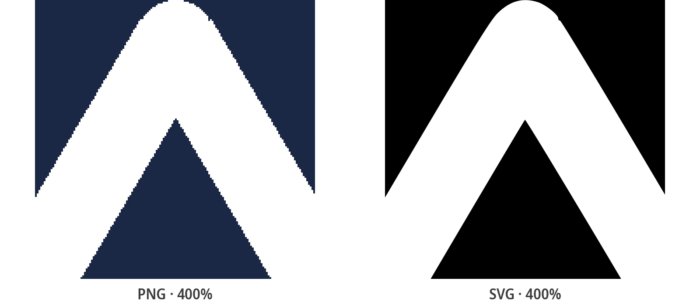

Как пакетно конвертировать PNG в SVG (Сравнение 5 методов)
Пять проверенных способов пакетного преобразования нескольких файлов PNG в SVG - онлайн-инструменты, горячая папка, бесплатные настольные приложения, скрипты и API - сравнение по стоимости, пропускной способности, цветопередаче и конфиденциальности.
Проблема пакетной обработки - и ловушка, которой следует избегать
У вас есть десять PNG. Или четыреста. Или - как у дизайнера, чей вопрос о 51 000 файлов открыл одну из самых длинных веток на форуме сообщества Adobe - целая библиотека ресурсов, которые должны стать векторными. Преобразовать одно изображение вручную - это нормально; но после этого вам понадобится пакетный рабочий процесс: процесс, который превращает целую папку растровых изображений в папку SVG. И если сегодня это действительно всего один важный файл, то бесплатный онлайн-конвертер PNG в SVGсделает работу меньше чем за минуту - это руководство охватывает все, что выходит за эти рамки.
Одно определение перед сравнением методов. Настоящее пакетное преобразование означает, что каждый PNG векторизуется: его формы перерисовываются в виде математических контуров, что и есть то, что на самом деле делает векторизация. Множество инструментов вообще пропускают этот шаг, и это полностью меняет результат.
Главная причина неудач: некоторые "SVG-конвертеры" вообще ничего не трассируют - они оборачивают ваш PNG внутри файла .svg как встроенное изображение. Результат масштабируется "идеально", потому что это все еще замаскированное растровое изображение. Откройте любой выходной файл в текстовом редакторе: гигантский тег base64 <image> вместо элементов <path> означает, что вы ничего не векторизовали. Каждый описанный ниже метод оценивается по настоящей трассировке.
Реальные результаты конвертера

Метод 1: Онлайн-конвертеры для пакетной обработки
Самый быстрый путь для небольшой партии. Несколько онлайн-инструментов принимают несколько файлов сразу: to.imagestool.com позволяет перетаскивать набор PNG и обрабатывает их локально в браузере; Pixelied принимает массовые загрузки и выдает вам ZIP-архив с результатами; веб-версия ImageResizer.com и reaConverter работают аналогичным образом. Никакой установки, никакой командной строки - перетаскивайте файлы, скачивайте результаты.
Две проверки, прежде чем вы доверите им реальную работу. Во-первых, убедитесь, что инструмент действительно трассирует: некоторые "пакетные" сайты просто зацикливают однофайловые преобразования на сервере и возвращают ZIP-архив псевдо-SVG - это ловушка со встраиванием, о которой предупреждалось выше. Во-вторых, читайте условия конфиденциальности, если изображения коммерческие или под NDA: инструменты на базе браузера никогда не загружают ваши файлы, а серверные отправляют каждое изображение на чужую машину. Для прозрачности: собственный бесплатный онлайн-конвертер PixelToPath намеренно работает только с одним файлом. Это подходящий инструмент для одного важного логотипа, а не для папки с четырьмястами файлами - и именно так он представлен в этом сравнении.
Метод 2: Настольное приложение с горячей папкой (PixelToPath Pro)
Если пакетная обработка - это еженедельное событие, а не разовая задача, "горячая папка" полностью устраняет ручной шаг. PixelToPath Pro (Windows и Linux) следит за папкой и автоматически конвертирует каждое попадающее в нее изображение. Весь процесс состоит из четырех шагов:
- Выберите свои папки: выберите папку для отслеживания и выходную папку, куда должны попадать SVG.
- Перетащите свои PNG: сохраните, скопируйте или перетащите всю партию во входную папку - десять файлов или несколько сотен.
- Пусть он работает: каждый файл трассируется по прибытии с использованием вашего сохраненного профиля настроек, полностью на вашем компьютере.
- Соберите SVG: результаты появляются в выходной папке с названиями исходных файлов.
То, что имеет значение для пакетной обработки: один профиль настроек применяется ко всей очереди. Конвертируйте четыреста значков вручную, и файл 300 никогда не будет точно соответствовать файлу 12; с профилем каждый результат последователен - деталь, которая разрушает ручные рабочие процессы. Все работает локально, поэтому нет ограничения на загрузку, и ни один файл никогда не покидает вашу машину. Pro стоит единовременно 39 € (без НДС), это пожизненная лицензия на одного пользователя максимум для 3 компьютеров; страница о пакетном преобразовании с помощью горячей папки подробно описывает все, что включено. Здесь это один из пяти вариантов - но это единственный вариант, созданный для того, чтобы пакетное преобразование стало шагом, о котором вы перестанете думать.
Метод 3: Бесплатные настольные приложения и Inkscape
Уже используете бесплатное настольное приложение? Оно конвертирует PNG, JPG, BMP и WebP в SVG в автономном режиме, без ограничений на количество файлов и с полным доступом к расширенным настройкам трассировки - но по одному файлу за раз. Пакетная обработка - это именно то, что добавляет обновление до версии Pro, и об этом стоит сказать прямо, а не притворяться, что это не так. Если вам нужно бесплатное, локальное приложение с графическим интерфейсом, то бесплатный настольный конвертер - это честный выбор для одиночных файлов: реалистичная пропускная способность составляет десятки файлов в день, а не сотни.
Inkscape - еще одна бесплатная рабочая лошадка. Его диалоговое окно «Трассировать растр» также предназначено для одного изображения, и хотя Inkscape предоставляет параметры командной строки, которые можно зациклить в скрипте, этот процесс сложен и почти не задокументирован. У GIMP, к слову, вообще нет встроенного пакетного экспорта векторов - это регулярно подтверждают ветки на форумах. Прежде чем тратить часы на рабочий процесс с графическим интерфейсом, проверьте, действительно ли вам нужны векторы для каждого файла: сравнение SVG против PNG для Интернета описывает, когда преобразование того стоит.
Метод 4: Скрипты командной строки (ImageMagick, Potrace, VTracer)
Для разовых массовых заданий скрипт оболочки из десяти строк превосходит любой графический интерфейс. Классический черно-белый конвейер связывает ImageMagick с Potrace - конвертируй, затем трассируй: magick input.png input.pbm && potrace -s -o input.svg input.pbm
Оберните это в цикл «for» по вашей папке, и Potrace будет выводить настоящие векторные контуры со скоростью вашего процессора - но строго в черно-белом цвете. Для цвета укажите тому же циклу на vtracer - трассировщик с открытым исходным кодом на Rust, который также является основой PixelToPath. Оба инструмента содержат достаточно флагов, чтобы заполнить руководство, поэтому для каждого есть специальный гайд (ссылка будет здесь после публикации). Скрипты выигрывают в стоимости (бесплатно), конфиденциальности (локально) и объемах (тысячи за прогон); они проигрывают на входе - вы поддерживаете конвейер, и никто не возмещает тот вечер, когда он сломается.
Метод 5: Цикл API для CI и серверной работы
Когда преобразования должны происходить на сервере - во время развертывания, внутри конвейера сборки, из бэкенда - локальные инструменты перестают быть вариантом. Паттерн представляет собой цикл: один POST-запрос без сохранения состояния на каждое изображение с вашим ключом Bearer, каждый SVG записывается прямо в ваш конвейер ресурсов. Лимит составляет 60 запросов в минуту на ключ, поэтому регулируйте скорость цикла и повторяйте вызовы, ограниченные лимитом, с экспоненциальной задержкой; неудачные вызовы никогда не расходуют кредиты. Вы можете автоматизировать всю пакетную обработку с помощью REST API вообще без локальных установок - в чем и заключается суть.
Математика стоимости предсказуема: предоплаченные изображения стоят от €0.05 до €0.01 за штуку при больших объемах, поэтому 500 изображений стоят около €20, а 10 000 — около €200 - и каждая учетная запись добавляет 10 бесплатных конвертаций сверху, каждый месяц. Выбирайте API, когда конвертации должны быть воспроизводимыми, на стороне сервера и без локальных зависимостей. Выбирайте горячую папку, когда они локальные и интерактивные. Эти два варианта охватывают почти каждую реальную пакетную задачу.
Пакетное преобразование PNG в SVG: сравнение всех пяти методов
Одни и те же исходные данные, пять совершенно разных контрактов. Стоимость и конфиденциальность являются структурными, а не рекламными; пропускная способность предполагает одного оператора (или скромный сервер) на реалистичном оборудовании; а «цвет» означает настоящий многоцветный векторный вывод, а не черный силуэт.
| Метод | Стоимость | Файлов/день (реалистично) | Цвет | Контроль качества | Конфиденциальность | Требуемые навыки |
|---|---|---|---|---|---|---|
| Онлайн-конвертеры | Бесплатно | 50-500 (вручную) | Зависит от инструмента | Только пресеты | По-разному - проверьте условия | Нет |
| Горячая папка Pro | 39 € разово | Тысячи (локальный CPU) | Да | Один профиль, все настройки | 100% локально | Нет |
| Бесплатное настольное / Inkscape | Бесплатно | 20-100 (по одному) | Да (одиночные файлы) | Полный, на каждый файл | 100% локально | Базовые |
| Скрипты (CLI) | Бесплатно | Тысячи+ (локальный CPU) | Potrace нет - VTracer да | Полный (флаги) | Локально | Командная строка |
| Цикл API | 10 бесплатно/мес, далее €0.01-0.05/изображ. | Десятки тысяч (60 запр./мин) | Да | Параметры движка на запрос | Загружаемые файлы | Разработчик |
Если вы конвертируете пакеты чаще одного раза в месяц, Методы 2 и 5 окупятся в первый же день. Для всего, что меньше, Метод 1 или 3 ничего не стоят, кроме небольшого количества вашего времени.
Связанные руководства по конвертации
Пакетное преобразование - это шаг первый. Здесь описывается остальное.
Часто задаваемые вопросы
Могу ли я пакетно конвертировать PNG в SVG бесплатно?
Да, двумя способами. Скрипты командной строки (Potrace, ImageMagick, VTracer) бесплатны без ограничений на файлы, а бесплатное настольное приложение вместе с Inkscape бесплатны, но конвертируют по одному файлу за раз. Существуют также бесплатные онлайн-инструменты, которые принимают несколько файлов - просто убедитесь, что они действительно векторизуют, и прочтите их условия конфиденциальности перед отправкой коммерческих графических работ.
Как сохранить цвета при пакетном преобразовании?
Используйте цветной трассировщик. Potrace строго черно-белый, как бы вы его ни заскриптовали; VTracer, PixelToPath Pro и PixelToPath API работают на цветовом движке, который перестраивает каждую цветовую область как отдельную векторную фигуру. Заскриптуйте цикл с помощью vtracer или используйте Pro или API, если вы предпочитаете не поддерживать его.
Могу ли я загрузить ZIP-архив PNG и получить ZIP-архив SVG?
Некоторые онлайн-инструменты (например, Pixelied) принимают массовые загрузки и возвращают ZIP-архив. Режимы пакетной обработки на ПК и скрипты записывают результаты в выходную папку, которую вы можете заархивировать в ZIP в один шаг. API возвращает по одному SVG на вызов, поэтому архивация остается на вашей стороне - что обычно и требуется для конвейера сборки.
Почему моя партия вышла в виде черных прямоугольников?
Это ловушка со встраиванием: инструмент обернул каждый PNG в контейнер SVG вместо того, чтобы трассировать его, и то, что вы видите, - это встроенное растровое изображение, которое не может отобразиться. Откройте один выходной файл в текстовом редакторе - единственный тег base64 <image> подтверждает это. Запустите пакет снова с помощью инструмента, который выводит настоящие элементы <path>.
У меня 50 000 файлов. Что реально сработает?
Горячая папка или API - все остальное упрется в ограничения задолго до этого. При 60 запросах в минуту API обрабатывает 50 000 изображений примерно за 14 часов реального времени примерно за €200 предоплаченных кредитов. Локальная горячая папка выполняет ту же работу в автономном режиме, при этом пропускная способность зависит от вашего процессора. Оба варианта сохраняют идентичные настройки на протяжении всего процесса.
Готовы разобрать свой бэклог PNG?
Конвертируйте один файл в бесплатном онлайн-инструменте, настройте горячую папку в Pro или зациклите API — в итоге всегда получаются чистые векторные контуры.
Поддержите разработку Open Source
PixelToPath бесплатен для использования. Если этот инструмент помог вам сэкономить время, угостите меня кофе.
❤️ Пожертвовать через PayPal